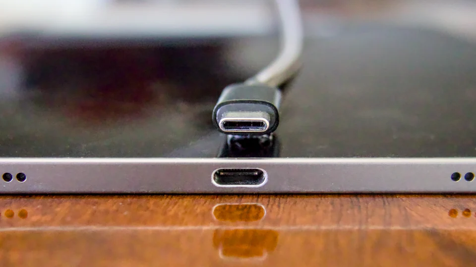
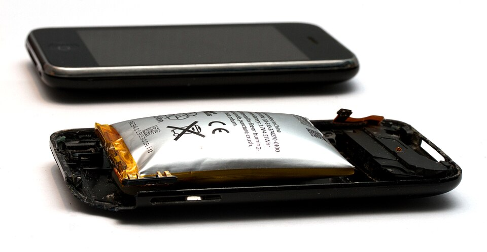

Phone charging faults and board-level triage
Compare a phone’s external charging behaviour, locate the suspect path on an unpowered donor, and rehearse component work on a training board.
Build a known-good charging comparison

Photo by Wikideas1, resized. Original photo · CC0.

Watch on YouTube · USB-C Power Delivery · STMicroelectronics
Follow how the source and device agree on a power profile. Use that distinction when comparing readings from your two cables.
Use your own physically sound USB-C phone, a compatible known-good source and cable, and an optional rated pass-through USB meter that supports the required negotiation. Measure the known-good setup first, then try the suspect phone or accessory by changing one item at a time. Compare both plug orientations at the phone and direct operation without the meter. Record charge state, source, cable, orientation, VBUS, input current, phone indication and whether it can transfer data with a known-good data cable. Data testing belongs on a device you own and can unlock normally.
| What you observed | Next test |
|---|---|
| Known-good setup works in both orientations. Suspect phone only charges in one. | Repeat with a second good cable. Inspect the phone receptacle for damage or debris with power disconnected and follow the model’s cleaning instructions. Consider the connector/CC path if the fault persists. |
| Wired charging repeatedly fails, supported wireless charging works. | Document working wireless charging as evidence. Check the port/module and its connection before escalating to board diagnosis. |
| Expected VBUS appears but battery does not gain charge. | Use the official battery status checks, note device activity and temperature, and compare with a repeat below the supported charge limit. |
| Black screen, but the device vibrates or reports to a trusted host. | Follow the display branch of the manual. A partial response narrows the fault and does not by itself verify boot completion. |
Do a cold check on a documented donor

Photo by Mpt-matthew, resized. Original photo · CC BY-SA 3.0.

Follow the model’s isolation sequence, then trace a documented path from the port or daughterboard through its flex and protection to an accessible point. Record visible connector or pad damage. With the board isolated and unpowered, compare continuity between identified points and compare diode-mode readings with a known-good board of the same revision using the same meter and orientation. Keep references and results attached to the job record. If the port is modular and the evidence supports it, follow the manufacturer’s procedure to replace and verify it.
For a soldered port, practise on an unpowered, battery-free connector training board with labelled breakout pads. Map ground and shell where the board specifies they are connected, VBUS and the available signal pads. After a supervised practice replacement, verify each routed pin-to-test-point connection and check adjacent independent nets for bridges. Work up from the resistor and castellated exercises in P26. A densely packed phone board may need microscope work, controlled heat and a qualified technician. Refer packed multilayer, data-critical, battery-damaged or undocumented cases.
Write the closing test
Recheck charge in both orientations with the recorded known-good combination. Where relevant, test data, mic, speaker, wireless, and any functions the port board carries. Record a later battery percentage under comparable use. For a referral, write the last confirmed node and why you stopped, so the next tech can begin there.